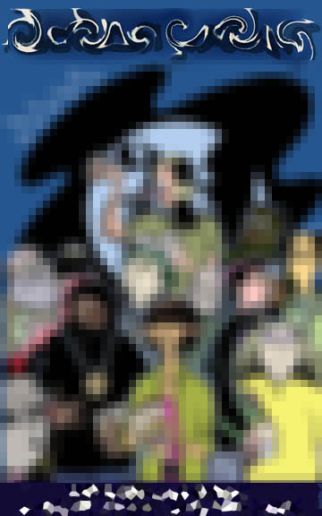

The Book!We've been talking about the upcoming LitKicks book since October 2003, when six writers emerged from among 113 participants in our QUEST writing tournament to become the first authors selected for this collection. We've also selected more than thirty other outstanding poems and stories by members of the LitKicks community, and wrapped it all inside a highly original mix of commentary, literary reference and anthropological observation to produce what promises to be one of the most original books of 2004. If you are one of the authors we plan to publish in this book, we will contact you within the next four weeks. No authors have been contacted yet. The exact publication date is still in flux, but we can tell you that the book will be available sometime after the Summer Solstice of 2004, and before the Autumnal Equinox. We are not going to reveal the title of the book at this point, because we would rather keep everybody in suspense. To protect the book's actual identity (and in the interest of national security), at this time we are only able to show you this obscured view of the cover. Stay tuned for more info soon.
|
The Tenth AnniversaryLitKicks will mark its tenth anniversary on Friday, July 23, 2004. While we celebrated our fifth anniversary with a big poetry reading, we are planning something a little different this time around. We're never going to be able to include the entire LitKicks community if we celebrate in a physical location, so we have made the decision that the party will actually take place online. If you would like more detail about what exactly we mean by this, you will just have to stay tuned ... but please circle that date on your calendar, using the brightest-colored highlighter you can find. It's going to be a good party, and you're totally invited.The LitKicks Staff (Levi, Caryn & Jamelah) |